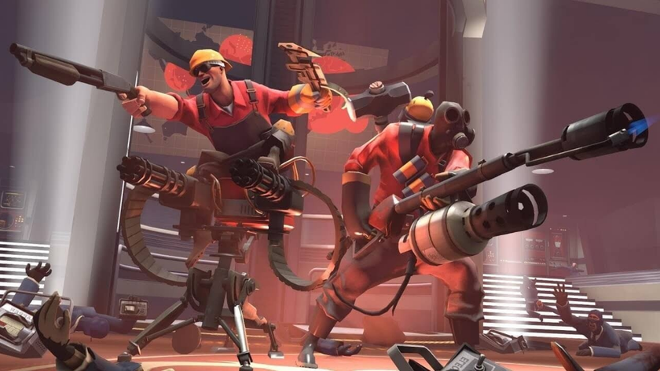

Персонажи
Плюсы и минусы каждого
В Тим Фортресе есть 9 основных класов, и все они взаемосзязаные, к примеру: Инженер когда он установил турель, без помощи поджигателя може ее легко потерять, так так шпион установит жучок, а поджигатель может его уничтожить, как и шпиона
Теперь розкажу про каждого класа по детальней
В Главном меню уже есть описания класов, но сейчас я разкажу про них детально
- Разведчик - самый быстрый класс в игре НЕ при наличии различных бафов. Его основная задача, как уже понятна из названия - разведовать територию, говорить где стоят турели, захватывать точки, толкать вагонетку. Рзведчик единственый класс который толкает или захватывает точку как за двоих, тоесть он быстее захватывает точки и толкает вагонетку. Его основная способность - это двойной прыжок.
- Солдат - медленый но ооочень сильный. Его ракеты могут убивать различные класы за 2 выстрела. Если Солдат находиться в правильных руках, то он становиться очень мобильныйм, из-за рокэт-джампов. Эта механика была зделана разработчиками случайно, но они решили её не убирать, а оставить как небольшой плюс Солдату, ведь он из-за Рокэт-джампов может умереть.
- Поджигатель - Целая огромная катастрофа для любого класа. Этот клас евляеться самым легким для новичков, ведь у него - огромный урон, большая скорость передвижения и разнообразные механики боя. Поджигатель имеет жатый воздух, с помощу которого он толкает противников, и отражает снаряды врагов, буд-то ракета или граната
- Подрывник - очень большой урон при попадании в тело. Его геймплей может отличаться в зависимости от игрока. Подрывник может быть обычным и демонайт. Демонайт - это Подрывник, но у него нету оружия дальнего боя, он надевает сапоги для скорости передвижения вместо Гранатомета, щит ускорения вместо Липучкрмета а также берет меч. Урон у "думонайта" довольно большой. Как и Солдат, Подрывник может прыгать на бомбах липучках. Он евляеться самым НЕпопулярным класом в игре
- Пулеметчик - имеет самое большое количество ХП и урона, но довольно медлительный. Пулеметчик подходит для обеех сторон, но лудше всего иметь Пулеметчика имено в обороне. В совокупности с Медиком, Пулеметчик становиться фактически безсметрным, но не все так гладко. Из-за своей скорости, он евляеться отличной жертвой для Шпиона
- Инженер - самый так скажем Командный клас в игре. Инженер может строить турели, раздачики и телепорты. Каждая постройка может быть улучшена до 3 уровня, чем выше уровень - тем лудшие характеристики. Инженер подходит как нельзя кстати в обороне, ведь его турель не пропустит никого мимо. Инженер без команды, не Инженер, так как Шпион может с легкостью его убить и сломать постройки. Лудший так скажем друг инженера это Поджигатель (написано в самом верху)
- Медик - клас подержки который редко выходит на линию фронта. Медик может лечить союзников, когда он лечит их, у него накапливаеться УБЕР-ЗАРЯД!!!!! Во время убер заряда, того кого лечил медиу в этот момент, становиться бесмертным. У Медика большая скорость передвижения а также он лечит так скажем сам себя по 3 ХП/с. В каждой команде должен быть хоть один Медик, или же команда проиграет
- Снайпер - НЕВЕРОЯТНО большой урон в голову. Снайпер стоячий клас подержки, который подходит в обороне. Легко уязвим когда он один из-за медленой скорости стрельбы. Основная фишка Снайпера - это концентрация. Это шкала которая накапливаеться когда Снайпер целиться в прицел, если убрать прицел или выстерлить, концентрацию прийдеться накапливать занаво. При полной шкале концентрации, урон будет становить 1.5 от урона, пример: Урон в голову 300 - а с концентрацией 450. Шкала закапливаеться около 12 секунд
- Шпион - самый ненавистный клас в игре. Клас подходит больше к атаки. Его онсновная задача это: убийство убер-зарядженого Медика, уничтожения турелей, убийств ключевых персонажей. Основная фишка Шпиона, это невидимость, максировка и убийство с одного удара в спину. Во время невидимости, Шпион не может атоковать, если шпион под невидимостю или же в маскировке, враг не сможет пройти сквозь него и это розсекретит Шпиона. Шпион трудный клас, за него нужно долго учиться играть